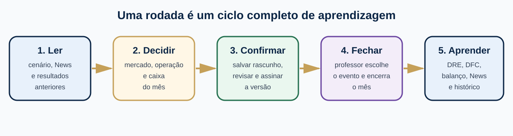
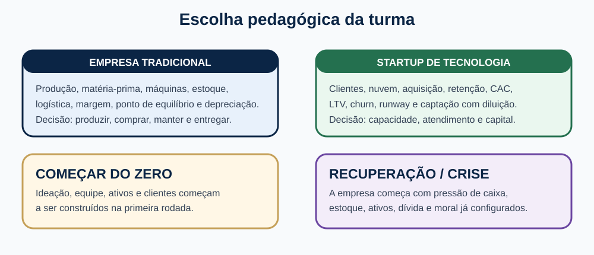
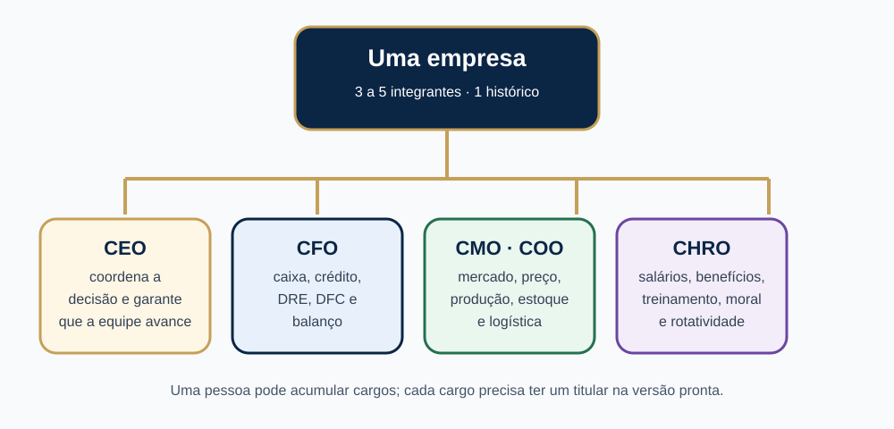
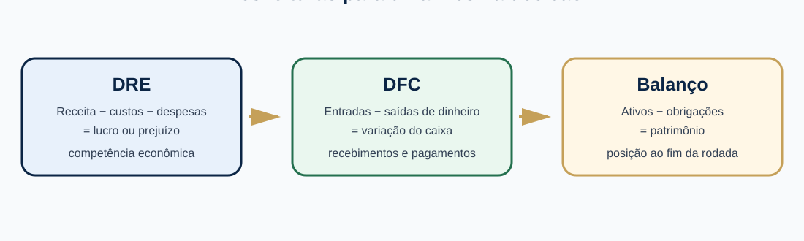

Simulador de empreendedorismo universitário
Do primeiro acesso à análise dos resultados: um roteiro para tomar decisões, trabalhar em equipe e aprender com cada rodada.
O SempreHub é uma simulação em ciclos. Cada rodada representa um período de operação. Você lê o cenário, toma decisões, confirma o envio e depois compara o que planejou com o que aconteceu. O sistema mantém o estado da empresa e o histórico de todas as rodadas; abrir a rodada seguinte não apaga decisões, assinaturas, resultados ou demonstrativos anteriores.

Figura 1 — Uma rodada só termina quando decisão, fechamento e leitura do resultado acontecem.
Ao fechar uma rodada, ficam preservados: a decisão enviada, a versão confirmada por cada integrante, os cargos, os eventos, os resultados, o estado operacional, a DRE, a DFC, o balanço, os indicadores e o histórico de participação. Na rodada seguinte, esse conjunto vira o ponto de partida. Uma decisão nova pode substituir o rascunho atual, mas não reescreve a fotografia de um mês já fechado.
Se a turma estiver configurada para equipes, quem abrir a empresa será o fundador e receberá o cargo de CEO. Os colegas não devem abrir outra empresa com o código da turma: devem usar Entrar em uma equipe e o código de convite fornecido pelo fundador.
O convite não é o mesmo que o código da turma. Se a mensagem de erro continuar, peça ao CEO para copiar o convite novamente ou ao professor para confirmar se a primeira rodada ainda está aberta.
Na primeira entrada, siga as orientações do tour na ordem indicada. Ao chegar ao final, marque Não mostrar novamente se já souber onde ficam os itens. A preferência fica associada ao usuário nesse navegador. Use Reabrir orientação inicial para consultar novamente.
O professor escolhe o modo e o cenário da turma antes da entrada da primeira empresa. Você não altera essas escolhas pelo painel individual.

Figura 2 — O modo define o tipo de operação; o cenário define o ponto de partida.
| Escolha | O que você acompanha |
|---|---|
| Empresa tradicional | Produção, matéria-prima, máquinas, manutenção, estoque de produtos acabados, logística, clientes, contas a receber e a pagar. |
| Startup | Clientes, capacidade de nuvem, aquisição, cancelamentos, CAC, LTV, churn, runway e participação dos fundadores. |
| Começar do zero | A empresa constrói operação, clientes, equipe e ativos ao longo das rodadas. |
| Recuperação / crise | A empresa parte de um estado configurado de pressão: caixa, dívida, estoque, ativos e moral exigem decisões de recuperação. |
Uma turma pode ter de uma a sessenta rodadas. O professor define a quantidade; você deve planejar considerando que decisões de hoje afetam o próximo período.

Figura 3 — Os cargos organizam a análise, mas a responsabilidade pelo resultado é compartilhada.
Uma equipe tem de 3 a 5 integrantes. O CEO coordena a empresa, mas não decide sozinho. O CFO acompanha caixa e relatórios; o CMO acompanha demanda e posicionamento; o COO acompanha produção, estoque e logística; o CHRO acompanha pessoas. Uma mesma pessoa pode acumular mais de um cargo, desde que cada cargo tenha um titular na configuração final.
A equipe só fica pronta quando todos os integrantes confirmam a mesma versão. Se alguém editar o rascunho depois de uma confirmação, as confirmações anteriores são invalidadas para evitar que um colega assine uma decisão diferente.
O motor considera a decisão em conjunto. Preço, marketing, qualidade, canal, capacidade e satisfação influenciam a demanda. Não escolha um campo isoladamente só porque ele aumenta uma métrica: anote a hipótese que explica o conjunto.
Na seção Produção e investimento, preencha:
Em Compras a prazo, defina a parcela da matéria-prima comprada a prazo e o vencimento. Lembre que uma compra pode entrar no estoque agora e sair do caixa depois.
Perguntas para a equipe:
Na seção Serviço digital e investidores, preencha:
Perguntas para a equipe:
Use a prévia operacional para verificar produção preparada, matéria-prima e participação após aporte. Ela é uma estimativa: demanda, vendas, recebimentos, tributos e evento dependem do fechamento do mês.
Clique em Salvar decisão para gravar o rascunho. Depois, revise os valores e confirme. A tela mostra a versão atual e quais integrantes já confirmaram. O botão de confirmação não substitui a conversa da equipe.
Leia o SempreHub News no começo de cada rodada e anote três coisas:
As notícias são insumos para uma hipótese, não uma resposta pronta. Compare o texto com o evento macroeconômico selecionado pelo professor e com o comportamento das empresas no painel de mercado.
Defina o público-alvo, o problema que ele quer resolver, os concorrentes diretos e indiretos e a tendência que pode mudar a demanda. Registre uma hipótese observável: “se reduzirmos o preço em X e mantivermos Y de capacidade, esperamos vender Z”.
| Base | Pergunta que a equipe deve responder |
|---|---|
| Demográfica | Quem é o público em idade, renda, profissão, escolaridade ou composição familiar? |
| Geográfica | Onde vive e que condições de região, clima, densidade ou logística influenciam a compra? |
| Psicográfica | Quais valores, estilo de vida, crenças e motivações orientam a escolha? |
| Comportamental | Com que frequência compra, o que valoriza e que relação tem com a marca? |
Uma segmentação útil muda a mensagem, o canal, o preço ou a oferta. Se não muda nenhuma decisão, ela ainda está genérica.
Use as forças para explicar uma decisão, não para produzir apenas uma lista. Exemplo: fornecedores concentrados podem justificar estoque de segurança, prazo negociado ou investimento em eficiência.
| Ferramenta | Use para | Resultado esperado |
|---|---|---|
| PESTEL | Mapear fatores político, econômico, social, tecnológico, ecológico e legal. | Alertas externos que a empresa não controla diretamente. |
| SWOT / FOFA | Organizar forças e fraquezas internas, oportunidades e ameaças externas. | Prioridades de ação para a próxima rodada. |
| Financeira | Relacionar receita, custo, lucro, caixa, capital de giro e risco. | Decisão que seja viável no caixa e sustentável no tempo. |
O orçamento de marketing deve ser justificado pela finalidade da mídia e pelo momento da empresa. As faixas abaixo são referências de estudo; no simulador, use o orçamento e os parâmetros da turma.
| Mídia | O que é e qual finalidade cumpre |
|---|---|
| Meta Ads | Anúncios no Instagram e Facebook, comprados por impressões ou cliques; servem para gerar alcance, consideração e conversões segmentadas. |
| Google Ads | Anúncios em buscas e sites parceiros, normalmente por clique; capturam pessoas que já demonstraram intenção. |
| YouTube Ads | Vídeos ou banners em inventário de vídeo; servem para demonstração, lembrança e alcance audiovisual. |
| TikTok Ads | Campanhas em formato curto e nativo; servem para descoberta e interação em ambientes de vídeo. |
| LinkedIn Ads | Anúncios por clique ou impressão em rede profissional; servem para comunicação institucional e geração de contatos profissionais. |
| Mídia programática | Compra automatizada de banners por leilão; serve para distribuir alcance e remarketing em portais. |
| Pinterest Ads | Pins patrocinados por clique ou impressão; servem para inspiração, descoberta e tráfego para uma oferta. |
| WhatsApp, SMS e push | Mensagens enviadas por canais autorizados; servem para relacionamento, lembrete e ativação de uma base existente. |
| Conteúdo e redes sociais | Publicações, vídeos e artigos próprios; servem para educar, criar confiança e reduzir dependência de mídia paga. |
| SEO | Melhorias técnicas e editoriais para aparecer organicamente em buscadores; serve para aquisição de longo prazo. |
| E-mail marketing e CRM | Mensagens para contatos que autorizaram relacionamento; servem para retenção, ofertas e reativação. |
| Mídia | O que é e qual finalidade cumpre |
|---|---|
| TV aberta ou por assinatura | Inserções audiovisuais em programação; servem para alcance e lembrança em grande escala. |
| Rádio | Spots falados ou musicais em pacotes de inserções; servem para frequência e presença local. |
| Jornal e revista | Espaços impressos por coluna, página ou encarte; servem para informação, credibilidade e segmentação editorial. |
| Outdoor | Painel fixo por período; serve para visibilidade repetida em uma rota geográfica. |
| Painel de LED | Tela externa com inserções rotativas; serve para alcance visual e atualização de mensagens. |
| Busdoor / backbus | Adesivagem em veículos de transporte; serve para circulação da mensagem em áreas definidas. |
| Mobiliário urbano | Abrigos, relógios e painéis em espaços públicos; serve para presença no trajeto cotidiano. |
| Telas de elevador | Circuitos em edifícios; servem para frequência em ambientes corporativos ou residenciais. |
| Streaming de áudio | Anúncios em áudio com ou sem banner; serve para alcance durante consumo de música e podcasts. |
| Podcast | Testemunhal ou spot apresentado pelo programa; serve para associação de contexto e confiança. |
| Cinema | Vídeo antes da sessão; serve para atenção em ambiente audiovisual. |
| Influência | Pacote de entregas de criadores; serve para demonstração, prova social e conversa com uma comunidade. |
| Panfletagem | Material impresso distribuído com promotores; serve para cobertura física e chamada para ação. |
| Materiais de PDV | Wobblers, totens e móbiles no ponto de venda; servem para destacar a oferta no momento da escolha. |
| Eventos e parcerias | Presença, patrocínio ou ação conjunta; serve para relacionamento, experimentação e geração de contatos. |
Para uma empresa iniciante, 5% a 10% do faturamento bruto projetado é uma referência didática; para uma empresa estabelecida, 2% a 5% é uma referência de manutenção. Não trate essas faixas como regra automática: compare retorno esperado, caixa disponível, prazo de recebimento e objetivo da rodada.
No caixa, mídias digitais frequentemente exigem pagamento antecipado ou imediato. Mídias tradicionais podem ser faturadas depois da veiculação. O prazo de pagamento deve ser lançado junto com as demais obrigações, pois uma campanha que parece barata pode pressionar a rodada seguinte.

Figura 4 — DRE, DFC e balanço respondem perguntas diferentes.
A DRE explica se a operação gerou lucro ou prejuízo: receita, custos, despesas, tributos, juros e depreciação. Uma venda a prazo aparece na receita quando ocorre, mesmo que o dinheiro só seja recebido depois.
A DFC explica a variação do caixa: recebimentos, pagamentos, investimentos e financiamentos. Uma máquina pode reduzir o caixa na compra e não aparecer como despesa integral na DRE naquele mesmo mês. Um aporte aumenta o caixa, mas não é receita.
O balanço mostra caixa, contas a receber, estoques, máquinas líquidas, contas a pagar, dívidas, patrimônio e capital de giro no fim da rodada. Use-o para responder “o que a empresa tem e o que deve agora?”.
Se um indicador não tiver base válida, ele pode aparecer como “—”. Isso significa que a pergunta não pode ser respondida honestamente com os dados disponíveis, e não que a empresa tenha resultado zero.
Depois do fechamento da primeira rodada, o sistema disponibiliza o relatório da equipe. Leia nesta ordem:
Abra o Relatório da primeira rodada no painel da empresa após o fechamento. Ele fica disponível automaticamente e permanece nas rodadas seguintes. A avaliação pedagógica apoia a discussão e não é uma nota institucional automática.
Use a aba Autores e referências do sistema para consultar a bibliografia selecionada pela disciplina. O quadro abaixo organiza o caminho de estudo; capítulos podem variar conforme a edição adotada pelo professor.
| Autor / referência | Procure no livro ou material | Aplicação no SempreHub |
|---|---|---|
| Philip Kotler e Kevin Keller | Segmentação, mercado-alvo, posicionamento, produto, preço, praça e promoção. | Demanda, preço, marketing e canais. |
| Marcos Cobra | Administração de marketing, comportamento, composto de marketing e decisões de mercado. | Escolhas de oferta, comunicação e relacionamento. |
| Michael Porter | Estratégia competitiva, cinco forças e estratégias genéricas. | Rivalidade, custo, diferenciação e risco de ficar sem posicionamento. |
| Nigel Slack e colaboradores | Capacidade, qualidade, estoque, planejamento e operações. | Produção, máquina, refugo, logística e nível de serviço. |
| Martins e Laugeni | Administração da produção, materiais, manutenção e produtividade. | Matéria-prima, manutenção e capacidade. |
| Assaf Neto | Análise financeira, capital de giro, fluxo de caixa e decisões de financiamento. | DFC, dívida, recebíveis, pagamentos e caixa. |
| Eliseu Martins e contabilidade gerencial | DRE, custos, ativos, depreciação e patrimônio. | Resultado econômico e balanço. |
| GEM | Empreendedorismo por oportunidade e por necessidade. | Perfil inicial escolhido na entrada da empresa. |
| José Dornelas | Tipos, processo e fases do empreendedorismo. | Classe inicial, captação, operação e sobrevivência. |
| Knight | Incerteza, risco e decisão empreendedora. | Eventos sorteados e aprendizagem sob incerteza. |
Anote a edição usada pelo professor e cite a fonte no relatório da equipe. A aba de referências orienta o estudo; ela não substitui a leitura do capítulo completo.
| Situação | O que verificar |
|---|---|
| Código da turma recusado | Confirme os seis caracteres, a turma e se a primeira rodada ainda está aberta. |
| Convite da equipe recusado | Cole o código completo, respeitando maiúsculas e minúsculas; confirme com o CEO. |
| Botão de confirmar indisponível | Salve o rascunho primeiro e confira se você está na versão atual. |
| Confirmação desapareceu | Outro integrante editou a decisão ou os cargos; revise e confirme novamente. |
| Não consigo mudar a equipe | A composição e os cargos só podem ser ajustados antes do fechamento da primeira rodada. |
| Caixa caiu mesmo com lucro | Verifique compras, máquinas, estoque, prazos, amortizações e a DFC. |
| Startup recebeu aporte mas não teve lucro maior | Aporte é financiamento; aumenta caixa e pode diluir os fundadores, mas não é receita. |
| Resultado antigo não aparece | Abra o histórico da empresa e o relatório da rodada; dados fechados não são apagados pela rodada seguinte. |